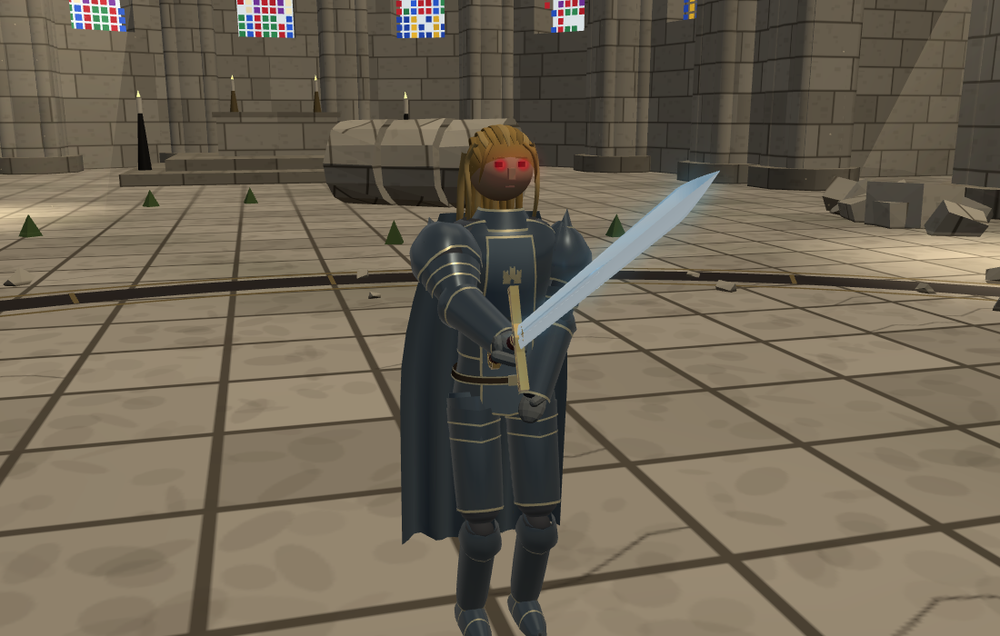

STILLNESS · 얼터 캐릭터 검토
두 왕의 또 다른 얼굴
얼굴을 드러낸 롤랑과, 얼굴을 봉인한 베르나르도.
광기의 롤랑
투구 아래의 왕 — 왕이 투구를 벗었는데, 얼굴만은 수십 년 전 출정하던 날 그대로였습니다.

황금빛 반묶음 · 어두운 강철 갑옷 · 회청색 망토 · 뒤랑달광기의 롤랑과 대련다른 각도 보기
두 인물 모두 이베리아 숙련도 6. 기존 체력·성향·무기를 유지했습니다. 롤랑은 맨머리, 베르나르도는 폐쇄형 투구에 맞는 머리 보호 판정을 사용합니다. 큰 사진은 실제 전투에서 카메라를 가까이 이동해 촬영했고, 정면·사선·뒷면은 같은 조건의 도감 촬영입니다. 별도 검토판으로 정규 방랑 편성에는 아직 추가하지 않았습니다.